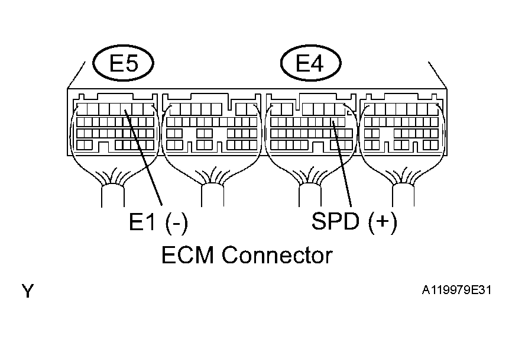

Inspection Procedure
HINT:
Read freeze frame data using the intelligent tester. Freeze frame data records the engine conditions when a malfunction is detected. When troubleshooting, freeze frame data can help determine if the vehicle was running or stopped, if the engine was warmed up or not, if the air-fuel ratio was lean or rich, and other data from the time the malfunction occurred.
- CHECK OPERATION OF SPEEDOMETER
- Drive the vehicle and check if the operation of the speedometer in the combination meter is normal.
HINT:
The vehicle speed sensor is operating normally if the speedometer reading is normal.
NG: CHECK SPEEDOMETER CIRCUIT
OK: Go to Next Step
- Drive the vehicle and check if the operation of the speedometer in the combination meter is normal.
- INSPECT ECM (SPD VOLTAGE)
- Move the transmission gear selector lever to the neutral position.
- Jack up the vehicle.
- Turn the ignition switch ON.
- Measure the voltage between the terminals of the E4 and E5 ECM connectors as the front wheel is turned slowly.
Standard voltage
TESTER CONNECTION - SPECIFIED CONDITIONSTester Connection Specified Condition SPD (E4-8) - E1 (E5-3) Voltage generated intermittently 
Courtesy of © TOYOTA, LICENSE AGREEMENT TMS1002HINT:
The output voltage should fluctuate up and down similarly to the diagram when the wheel is turned slowly.
NG: REPAIR OR REPLACE HARNESS OR CONNECTOR
OK: REPLACE ECM